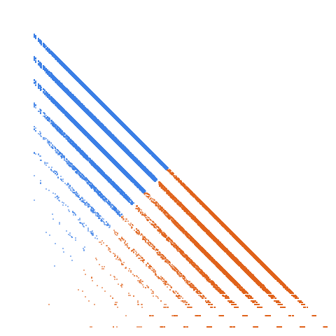

Primes having only {0, 3, 4} as digits

Open in the 3-D viewerA199340 on the OEIS
| Terms | 100,000 (n = 1 … 100,000) |
|---|---|
| Decomposable (a > 2d) | 99,987 |
| Level class, k > L | 38,168 · 38.17 % |
| Weight class, k ≤ L | 61,819 · 61.83 % |
| Ties, k = L | 0 |
| On the level line L = 1 | 6,002 |
| Forced level, l ≤ d² | 2,688 |
| Range of a(n) | 3 … 40,433,444,434,043 |
| Range of the jump d | 10 … 25,555,555,559,100 |
| Largest weight k, level L | 40,433,443,027,763, 3,675,494,849,493 |
4,319 different gaps occur, from 10 to 25,555,555,559,100; the level share is 38.17 %; 2.7 % of terms are forced level (l <= d^2); there are no ties; 13 terms do not decompose.
The decomposition
Every term of a strictly increasing sequence is written a(n) = k(n)·L(n) + d(n): the jump d = a(n+1) − a(n), the weight k the least divisor of a − d greater than d, the level L = (a − d)/k. A term decomposes when a > 2d; it is in the level class when k > L and in the weight class when k ≤ L. See decompwlj.com and arXiv:0711.0865, or how it works, with worked examples and a live one.